<!DOCTYPE html><html lang="PT-BR"><head><meta charset="UTF-8"/><meta property="og:locale" content="pt_BR"/><meta property="og:url" content="http://frontendcarioca.com.br"/><meta property="og:title" content="Front End Carioca - 2015"/><meta property="og:site_name" content="Front End Carioca"/><meta property="og:description" content="O melhor evento de Front End do Rio de Janeiro."/><meta property="og:image" content="http://frontendcarioca.com.br/assets/image/metatag.jpg"/><meta property="og:image:type" content="image/jpeg"/><meta property="og:image:width" content="700"/><meta property="og:image:height" content="400"/><meta property="og:type" content="website"/><meta name="description" content="Front-End Carioca - Rio de janeiro"/><meta name="viewport" content="width=device-width"/><title>Front End Carioca 2015</title><link href="http://fonts.googleapis.com/css?family=Roboto:400,100,300,500,700,900" rel="stylesheet" type="text/css"/><link href="http://fonts.googleapis.com/css?family=Lato:300,400,700,900" rel="stylesheet" type="text/css"/><link rel="stylesheet" href="assets/style/animated.css"/><link rel="stylesheet" href="assets/style/animate.css"/><link rel="stylesheet" href="assets/style/main.css"/></head></html><body></body><body></body><div class="wrapper"><section id="intro" class="intro"><nav role="navigation" class="row navMenu"><ul class="navMenu--list"><li class="navMenu--item"><a href="#intro" class="active">HOME</a></li><li class="navMenu--item"><a href="#about">SOBRE</a></li><li class="navMenu--item"><a href="#programacao">PROGRAMAÇÃO</a></li><li class="navMenu--item"><a href="#local">LOCAL</a></li><li class="navMenu--item"><a href="#patrocinio">PATROCÍNIO</a></li><li class="navMenu--item"><a href="#contato">CONTATO</a></li></ul><a href="http://even.tc/front-end-carioca-2015" target="_blank" class="btn-menustick">Inscreva-se</a></nav><header role="banner" data-parallax="scroll"><div data-stellar-ratio="0.9" class="wrapper-intro"><div class="intro-logo animated-logo fadeInUp-Header"><h1>FRONT END CARIOCA</h1></div><div class="row"><div class="intro-datails animated-datails pulse-slow"><span class="intro-datails_text"><time class="intro-datails_time">26 de Setembro, 2015</time> - Rio de Janeiro</span><br><span class="intro-datails_text sorteio">1º Lote Concorrerá a um iPad Mini</span></div><div class="intro-actions"><a href="mailto:contato@frontendcarioca.com.br?subject=PATROCINIO - FRONT END CARIOCA 2015" title="Seja um Patrocinador" class="animated-btns-left zoomIn-Header">SEJA UM PATROCINADOR</a><a href="http://even.tc/front-end-carioca-2015" title="Inscreva-se" target="_blank" class="animated-btns-right zoomIn-Header">INSCREVA-SE</a></div></div></div></header></section><div class="space-top"></div><main role="main" class="wrapper-content-home"><section id="about" class="section section-about animated-section-about slideInUp-Header"><svg id="Layer_1" version="1.1" xmlns="http://www.w3.org/2000/svg" xmlns:xlink="http://www.w3.org/1999/xlink" x="0px" y="0px" width="2560px" height="150px" viewbox="0 0 2560 150" enable-background="new 0 0 2560 150" xml:space="preserve"><path fill="#FFFFFF" d="M2497,0.3l-256,56l-198-40l-220,40l-44-36l-236,22L1425,0.2L1359,56h-156l-50-27.8l-122,42.2l-204-48	  l-240,46l-107-58l-133,102L117,0.4L0,88.4V150h2560V34.4"></path></svg><div class="row"><div class="title-section"><h2>Sobre</h2></div><div class="content-section"><h3>História</h3><p><font>O Front-end Carioca surgiu de uma ideia dentro da comunidade de desenvolvedores web, tendo como objetivo enriquecer o conhecimento profissional através de ciclos de palestras, workshop, networking e é claro, bastante incentivo. </font><font>Em 2014, na Universidade Veiga de Almeida, realizamos nossa primeira edição e com certeza foi um sucesso, fizemos de tudo para apresentar um ótimo conteúdo aos participantes. </font><font>Já em 2015 estamos vindo com força total e bastante conteúdo legal, propostas de estágios, empregos, parcerias, sorteios de cursos e de livros. Além da principal parte do evento: networking, onde os participantes trocam ideias/experiências e a comunidade cresce.</font></p><h3>Quem vai ao evento?</h3><p><font>Bom, no evento vai todo tipo de pessoas, não há restrições, só queremos compartilhar conhecimentos e mostrar melhores formas de crescer e se dar bem nesta área. </font><font>Geralmente o evento é frequentado por pessoas de todo o Brasil, entre eles profissionais com muitas experiências de mercado, por outro lado, uma galera iniciante querendo aprender mais. </font><font>Acho que para falar a verdade só tá faltando você conosco. Não importa se você é de outra cidade, você será bem vindo. Faça uma força e visite a maior conferência de Desenvolvedores web do Rio de Janeiro. </font><font>Sua experiência profissional nunca mais será a mesma.</font></p></div></div></section><div class="banner banner-one"><h3>AQUEÇAM OS MOTORES :)</h3></div><section id="programacao" class="section section-programacao"><div class="row"><div class="title-section"><h2>Programação</h2></div><ul class="timeline"><li><div class="box-talk"><time class="talk-time">08:00 - 8:40</time><h4 class="sub-title">Credenciamento</h4><p>Não esqueça de trazer seu RG para a identificação e entrega de brindes.</p></div></li><li><div class="box-talk"><time class="talk-time">08:40 - 9:20</time><h4 class="sub-title">Coffee Break</h4><p>Antes do evento começar, aproveite para tomar um café, fazer novas amizades e rever os amigos.</p></div></li><li><div class="box-speaker"><div class="box-speaker-media"></div>    <h3 class="sub-title">Ciro Nunes - apresentador</h3>    <p>Senior Front-end Engineer at <a href="http://www.questrade.com" target="_blank">Questrade</a></p>    <p><i class="icon-social-twitter"></i>      <a href="https://twitter.com/cironunesdev" target="_blank" class="hover hover-3d speaker-link"><span data-title="@cironunesdev">@cironunesdev</span></a></p></div><div class="box-talk"><time class="talk-time">9:20 - 9:30</time><h4 class="sub-title">Abertura e apresentações com Pedro Polisenso e André Vitor</h4><p>Nosso amigo Ciro Nunes vai conduzir o evento até o final, apresentando cada palestrante, batendo um papo com eles e o resto você acompanha de perto.</p></div></li><li><div class="box-speaker"><div class="box-speaker-media"></div>    <h3 class="sub-title">Willian Justen (Biber)</h3>    <p>Desenvolvedor Front-end at <a href="http://www.globo.com" target="_blank">Globo.com</a></p>    <p><i class="icon-social-twitter"></i>      <a href="https://twitter.com/Willian_justen" target="_blank" class="hover hover-3d speaker-link"><span data-title="@Willian_justen">@Willian_justen</span></a></p></div><div class="box-talk"><time class="talk-time">9:30 - 10:10</time><h4 class="sub-title">Criando Novas Experiências com SVG</h4><p>Nessa palestra eu irei mostrar como o SVG pode melhorar e modificar as experiências do usuário em um projeto e como você já pode sair da palestra utilizando.</p></div></li><li><div class="box-speaker"><div class="box-speaker-media">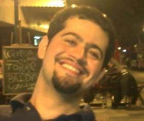</div>    <h3 class="sub-title">Diego Ramos</h3>    <p>Senior Developer at <a href="http://www.bematech.com.br/" target="_blank">Bematech</a></p>    <p><i class="icon-social-github"></i>      <a href="https://github.com/rdiego26" target="_blank" class="hover hover-3d speaker-link"><span data-title="@rdiego26">@rdiego26		</span></a></p></div><div class="box-talk"><time class="talk-time">10:10 - 10:50</time><h4 class="sub-title">Em definição</h4><p></p></div></li><li><div class="box-speaker"><div class="box-speaker-media">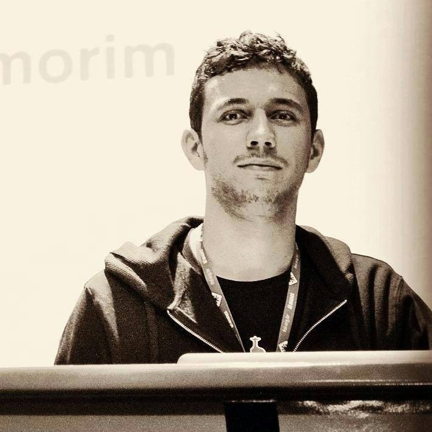</div>    <h3 class="sub-title">Raphael Amorim</h3>    <p>JavaScript Evangelist						</p>    <p><i class="icon-social-twitter"></i>      <a href="https://twitter.com/raphamundi" target="_blank" class="hover hover-3d speaker-link"><span data-title="@raphamundi">@raphamundi</span></a></p></div><div class="box-talk"><time class="talk-time">10:50 - 11:30</time><h4 class="sub-title">Como ser um Desenvolvedor transante?</h4><p>De maneira divertida e informativa irá abordar o desenvolvimento voltado para o open source. Como começar a contribuir? Qual a semântica ideal? Qual o peso da refatoração, linting, code review e testes? Com essa palestra mais força de vontade e dedicação você consegue liberar o dev star que existe dentro de você.</p></div></li><li><div class="box-speaker"><div class="box-speaker-media"></div>    <h3 class="sub-title">Leo Balter</h3>    <p>Open Web Enginner at <a href="http://bocoup.com/" target="_blank">Bocoup</a></p>    <p><i class="icon-social-twitter"></i>      <a href="https://twitter.com/leobalter" target="_blank" class="hover hover-3d speaker-link"><span data-title="@leobalter">@leobalter		</span></a></p></div><div class="box-talk"><time class="talk-time">11:30 - 12:10</time><h4 class="sub-title">Ambitious Web Applications</h4><p>Em poucos tempo uma aplicação pronta, robusta e testada. Pela linha de comando, um passeio pelo Ember-CLI utilizando uma base de dados servida via Endpoints para criar uma aplicação completa feita com JS.</p></div></li><li><div class="box-talk"><time class="talk-time">12:10 - 13:50</time><h4 class="sub-title">Pausa para o Almoço</h4></div></li><li><div class="box-speaker"><div class="box-speaker-media">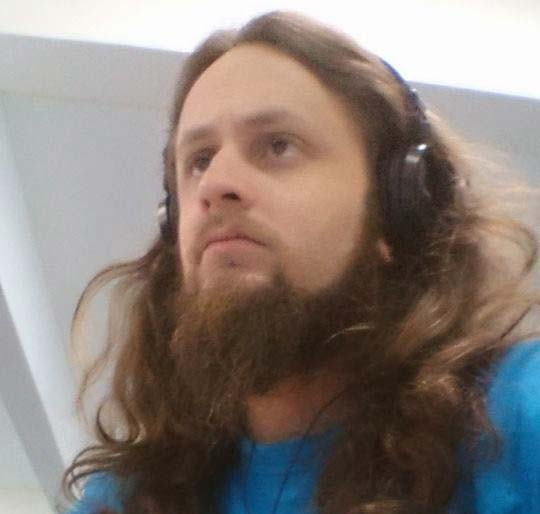</div>    <h3 class="sub-title">Jaydson Gomes</h3>    <p>Senior Front-end Enginner at <a href="http://www.terra.com.br/" target="_blank">Portal Terra</a></p>    <p><i class="icon-social-twitter"></i>      <a href="https://twitter.com/jaydson" target="_blank" class="hover hover-3d speaker-link"><span data-title="@jaydson">@jaydson</span></a></p></div><div class="box-talk"><time class="talk-time">14:00 - 14:40</time><h4 class="sub-title">Em definição</h4><p></p></div></li><li><div class="box-speaker"><div class="box-speaker-media"></div>    <h3 class="sub-title">Pedro Nauck</h3>    <p>Front-end Enginner <a href="#" target="_blank"></a></p>    <p><i class="icon-social-twitter"></i>      <a href="https://twitter.com/pedronauck" target="_blank" class="hover hover-3d speaker-link"><span data-title="@pedronauck">@pedronauck</span></a></p></div><div class="box-talk"><time class="talk-time">14:40 - 15:20</time><h4 class="sub-title">ReactJS: Keep simple. Everything is a component!</h4><p>Um dos maiores problemas ao desenvolver uma aplicação é como manter uma arquitetura que escale e ao mesmo tempo seja simples de dar manutenção. O ReactJS nasceu com um conceito muito forte para resolver isso: Manter a simplicidade. Faremos uma breve introdução à library e veremos como lidar com a criação de components para criar uma aplicação escalável e com alta performance.</p></div></li><li><div class="box-talk"><time class="talk-time">15:20 - 16:00</time><h4 class="sub-title">Pausa para o Coffee Break</h4></div></li><li><div class="box-speaker"><div class="box-speaker-media"></div>    <h3 class="sub-title">Em definição</h3>    <p>--- <a href="#" target="_blank">---</a></p>    <p><i class="icon-social-twitter"></i>      <a href="#" target="_blank" class="hover hover-3d speaker-link"><span data-title="">@--</span></a></p></div><div class="box-talk"><time class="talk-time">16:00 - 16:40</time><h4 class="sub-title">Em definição</h4><p></p></div></li><li><div class="box-speaker"><div class="box-speaker-media"></div>    <h3 class="sub-title">Em definição</h3>    <p>--- <a href="#" target="_blank">---</a></p>    <p><i class="icon-social-twitter"></i>      <a href="#" target="_blank" class="hover hover-3d speaker-link"><span data-title="">@--</span></a></p></div><div class="box-talk"><time class="talk-time">16:40 - 17:20</time><h4 class="sub-title">Em definição</h4><p></p></div></li><li><div class="box-speaker"><div class="box-speaker-media"></div>    <h3 class="sub-title">Em definição</h3>    <p>--- <a href="#" target="_blank">---</a></p>    <p><i class="icon-social-twitter"></i>      <a href="#" target="_blank" class="hover hover-3d speaker-link"><span data-title="">@--</span></a></p></div><div class="box-talk"><time class="talk-time">17:20 - 18:00</time><h4 class="sub-title">Em definição</h4><p></p></div></li><li><div class="box-talk"><time class="talk-time">18:00 - 18:30</time><h4 class="sub-title">Encerramento e Sorteios</h4></div></li></ul></div></section><section id="local" class="section section-local"><div class="row"><div class="title-section"><h2>Local</h2></div></div><div class="content-map"><div id="map-canvas"></div><div class="description-map"><h3>Auditório do Clube de Engenharia</h3><p>Av. Rio Branco, 124 - Centro, Rio de Janeiro - RJ CEP: 20040-001</p></div></div></section><section id="patrocinio" class="section section-patrocinio"><div class="row"><div class="content-patrocinio"><div class="title-section"><h2>Patrocínio</h2></div><div class="small-12 medium-4 large-4 columns patrocinio-column"><h3>Patrocinio Premium</h3><a href="http://www.vtex.com/" target="_blank" title="Empresa patrocinadora">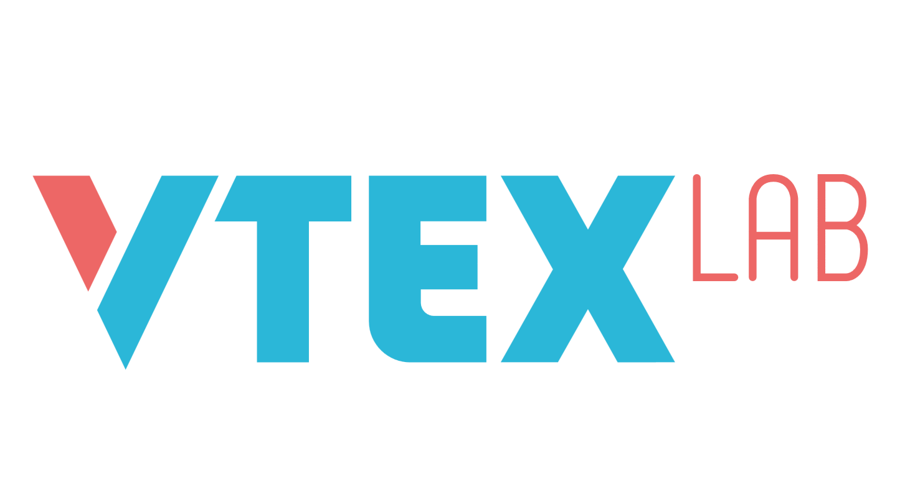</a></div><div class="small-12 medium-4 large-4 columns patrocinio-column"><h3>Patrocinio Ouro</h3></div><div class="small-12 medium-4 large-4 columns patrocinio-column"><h3>Patrocinio Prata</h3></div></div><div class="content-parceiras"><div class="title-section"><h2>Empresas Parceiras</h2></div><div class="small-12 medium-4 large-4 columns patrocinio-column"><h3>SOCIAL MIDIA</h3></div><div class="small-12 medium-4 large-4 columns patrocinio-column"><h3>VIDEO</h3></div><div class="small-12 medium-4 large-4 columns patrocinio-column"><h3>DESIGN<a href="http://pingdigital.com.br/" target="_blank" title="Empresa de parceria">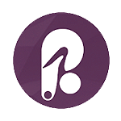</a></h3></div></div><div class="content-parceiras"><div class="title-section"><h2>Apoio &amp; Parcerias</h2></div><div class="small-12 medium-3 large-3 columns patrocinio-column apoio-column"><a href="http://novatec.com.br/" target="_blank" title="Empresa de apoio"></a></div><div class="small-12 medium-3 large-3 columns patrocinio-column apoio-column"><a href="https://www.treinaweb.com.br/" target="_blank" title="Empresa de apoio">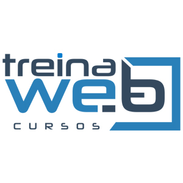</a></div><div class="small-12 medium-3 large-3 columns patrocinio-column apoio-column"><a href="https://www.eventick.com.br/" target="_blank" title="Empresa de apoio">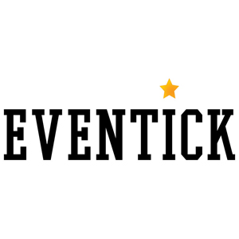</a></div><div class="small-12 medium-3 large-3 columns patrocinio-column apoio-column"><a href="http://braziljs.org/" target="_blank" title="Empresa de apoio">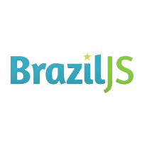</a></div><div class="small-12 medium-3 large-3 columns patrocinio-column apoio-column"><a href="http://riojs.org/" target="_blank" title="Empresa de apoio">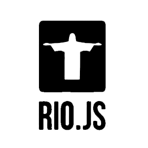</a></div></div><div class="content-parceiras"><div class="title-section"><h2>Convidados</h2></div><div class="small-12 medium-4 large-3 large-centered medium-centered columns patrocinio-column"><p>Maujor - Dinossauro do CSS</p></div></div><div class="content-parceiras"><div class="title-section"><h2>Organizadores</h2></div><div class="small-12 medium-6 large-6 large-centered medium-centered columns patrocinio-column"><div class="small-12 medium-6 large-6 columns"><h3>André Valle</h3><a href="https://github.com/andrevvalle" target="_blank"></a><p>Front-End Engineer</p></div><div class="small-12 medium-6 large-6 columns"><h3>Pedro Polisenso</h3><a href="https://github.com/pedropolisenso" target="_blank"></a><p>Senior Front-End Developer</p></div></div></div></div></section><div class="banner banner-two"><h3>Nos Vemos em Breve</h3></div><section id="contato" class="section section-contato"><div class="row"><div class="title-section"><h2>Acompanhe nossas redes sociais</h2></div><div class="content-section"><ul class="social-list"><li><a href="https://www.facebook.com/frontendcarioca" target="_blank" class="facebook"><i class="icon-social-facebook"></i></a></li><li><a href="https://twitter.com/frontendcarioca" target="_blank" class="twitter"><i class="icon-social-twitter"></i></a></li><li><a href="https://github.com/front-end-carioca" target="_blank" class="github"><i class="icon-social-github"></i></a></li></ul></div></div><footer><div class="row"><div class="logo-footer">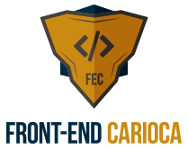</div><div class="content-footer"><a href="mailto:contato@frontendcarioca.com.br" class="email-contact">CONTATO<span>@</span>FRONTENDCARIOCA.COM.BR</a><p>© 2014 / 2015 - FRONT END CARIOCA. TODOS OS DIREITOS RESERVADOS.</p></div></div></footer></section></main></div><script src="assets/js/main.js"></script><script src="https://maps.googleapis.com/maps/api/js"></script>